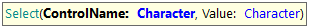
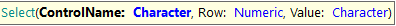

GXtest UI Commands - Select
Select commands are used to choose an option from drop-down boxes (and radiobuttons if using controlName commands) using the visible Text of the elements.
Select

Selects an option using drop-down or radiobutton's control name.
Parameters
- ControlName: name of the control where the option is displayed
- Value: the option to select
Example
&driver.Select("clientPreferredContactTime", "Morning")
Select

Selects an option using the drop-down or radiobutton's control name inside a grid.
Parameters
- ControlName: name of the control where the option is displayed
- Row: row number inside the grid to locate the control
- Value: the option to select
Example
&driver.Select("clientPreferredContactTime", 1, "Morning")
SelectByID

Selects an option using drop-down's ID attribute.
Parameters:
- ID: the HTML element ID of the drop-down control.
- Text: the visible text of the option to choose.
Example of use:
&driver.SelectById("Country", "England")
SelectByName

Selects an option using drop-down's 'name' attribute.
Parameters:
- Name: the 'name' attribute of the drop-down control.
- Text: the visible text of the option to choose.
Example of use:
&driver.SelectByName("City", "London")
SelectByCSS

Selects an option from a drop-down using a CSS selector.
Parameters:
- CSS: the CSS selector to the drop-down that you want to Select.
- Text: the visible text of the option to choose.
Example of use:
&driver.SelectByCSS("#currency", "US Dollars")
SelectByXPath

Selects an option from a drop-down using an XPath selector.
Parameters:
- XPath: the XPath selector to the drop-down item that you want to Select
- Text: the visible text of the option to choose
Example of use:
&driver.SelectByXPath("//select[@id='groupSelect']", "First Option")
| Backlinks | ||
| Toc:Automated Testing | GXtest UI Commands - Mouse Move | |
| GXtest UI Commands - Select (GeneXus 17 Upgrade 12) | GXtest UI Commands - Select (GeneXus 17) | GXtest UI Test for Web - Supported Commands |